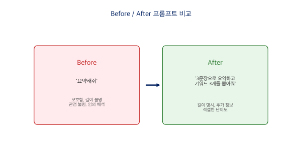
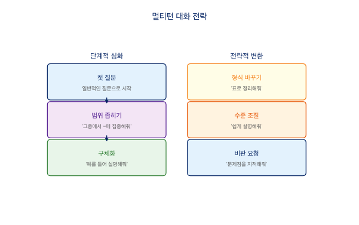

3장 프롬프트의 기초¶
프롬프트란?¶
프롬프트(Prompt)는 AI에게 보내는 지시문, 즉 입력 텍스트를 말합니다. 우리가 AI에게 '무엇을 해달라'고 요청하는 모든 텍스트가 프롬프트입니다.
일상 대화와 프롬프트의 차이를 생각해 봅시다. 사람에게 "요즘 날씨 좋다, 그치?"라고 말하면 상대방이 맥락을 알고 있으니 대충 말해도 통합니다. 하지만 AI에게는 맥락이 없으므로, "서울의 4월 평균 기온과 강수량을 표로 정리해줘"처럼 원하는 것을 명확히 설명해야 합니다.
프롬프트가 중요한 이유¶
같은 AI라도 프롬프트에 따라 답변 품질이 크게 달라집니다.
나쁜 프롬프트
"소설 추천해줘"
AI가 아무 소설이나 나열합니다. 내 취향과 무관한 결과가 나올 확률이 높죠.
좋은 프롬프트
"국문학과 학생인데, 근대 한국 단편소설 중 페미니즘 관점의 작품 3편을 추천해줘."
내 수준과 관심사에 딱 맞는 추천이 나옵니다.
프롬프트가 '상품'이 되는 시대이기도 합니다. PromptBase 같은 마켓플레이스에서 좋은 프롬프트가 $2~$10에 거래되고, '프롬프트 엔지니어'가 새로운 직업으로 등장했습니다. 언어 감각이 뛰어난 인문학도야말로 좋은 프롬프트를 만들 수 있는 사람입니다.
프롬프트 4원칙¶

원칙 1: 구체적으로¶
모호하게 말하지 않고, 원하는 것을 정확히 표현합니다.
Before — 모호한 프롬프트
무엇을 요약해야 하는지, 어느 정도 길이로, 어떤 관점에서 요약해야 하는지 모호합니다. AI가 임의로 해석하면 원하는 결과가 나오지 않습니다.After — 구체적인 프롬프트
'3문장'으로 길이를 명시하고, '키워드 3개'로 추가 정보를 요청하며, '국문학과 학생 수준'으로 난이도를 조절합니다.
원칙 2: 맥락 제공¶
나의 상황과 배경 정보를 알려줍니다.
After — 풍부한 맥락
전공 수준, 관심 분야, 시대 범위, 원하는 답변 형식이 모두 담겨 있습니다.원칙 3: 역할 부여¶
AI에게 전문가 역할을 부여하면 답변의 깊이와 전문성이 달라집니다.
After — 전문가 역할 부여
'한국 현대시 전문 비평가'라는 역할이 AI의 답변 톤과 깊이를 결정하고, 분석의 틀까지 명확하게 제시합니다.원칙 4: 출력 형식 지정¶
원하는 답변의 형태를 명시합니다.
After — 형식을 지정한 프롬프트
'5행 표'로 구조화된 정보를 요청하고, 열과 행을 명시해서 그대로 보고서에 붙여넣기 가능한 결과물을 받습니다.4원칙 한눈에 정리¶
| 원칙 | 나쁜 예 (Before) | 좋은 예 (After) |
|---|---|---|
| ① 구체적으로 | '요약해줘' | '3문장으로 요약하고 키워드 3개 뽑아줘' |
| ② 맥락 제공 | '소설 추천해줘' | '국문학과 학생인데, 근대 소설 중 페미니즘 관점 작품 추천해줘' |
| ③ 역할 부여 | '이 시 분석해줘' | '너는 현대시 비평가야. 운율, 이미지, 정서로 분석해줘' |
| ④ 출력 형식 | '비교해줘' | '5행 표로 정리해줘. 열은 항목/ChatGPT/Claude' |
4원칙을 조합하면 프롬프트의 품질이 크게 향상됩니다.
4원칙 적용 실전 예시¶
하나의 프롬프트에 4원칙을 모두 적용하면 어떻게 될까요?
나쁜 프롬프트
"한국 문학에 대해 알려줘"
4원칙을 모두 적용한 프롬프트
[역할] 너는 한국 근대문학 전문 교수야.
[맥락] 나는 국문학과 3학년이고, '한국 근대 소설의 여성상'
주제로 기말 리포트를 쓰고 있어.
[구체성] 1920~1940년대 소설에서 여성 인물이 어떻게
묘사되었는지 분석해줘.
[형식] 서론-본론(3개 소제목)-결론 구조로, 구체적인
작품명과 인용을 포함해서 1500자로 써줘.
결과: 전문적이고 구조화된 학술적 분석이 나옵니다.
멀티턴 대화 전략¶
AI와의 대화는 한 번으로 끝나지 않습니다. 여러 번 주고받으며 답변을 개선하는 것이 멀티턴 대화 전략입니다.

단계적 심화¶
한 번에 완벽한 답을 기대하지 말고, 대화를 이어가며 다듬어 봅시다.
[첫 질문] 한국 근대 소설의 특징을 알려줘.
→ AI가 일반적인 답변 제공
[후속 질문] 좀 더 구체적으로, 1920년대에 집중해서 알려줘.
→ 시대를 좁혀서 더 깊은 답변
[후속 질문] 그중에서 '감자'(김동인)를 예로 들어 설명해줘.
→ 특정 작품에 대한 상세 분석
[후속 질문] 이 내용을 3줄 요약해줘.
→ 간결한 정리
전략적 변환¶
답변의 형태나 수준을 바꿔달라고 요청할 수도 있습니다.
| 전략 | 예시 | 효과 |
|---|---|---|
| 범위 좁히기 | '그중에서 ~에 집중해줘' | 더 구체적인 답변 |
| 형식 바꾸기 | '지금 내용을 표로 정리해줘' | 읽기 편한 구조 |
| 수준 조절 | '초등학생도 이해할 수 있게' | 쉬운 설명 |
| 예시 요청 | '실제 사례를 3개 들어줘' | 실용적 답변 |
| 비판 요청 | '이 글의 문제점을 지적해줘' | 품질 향상 |
좋은 프롬프트의 핵심은 AI가 아니라 내가 먼저 생각을 정리하는 것입니다.